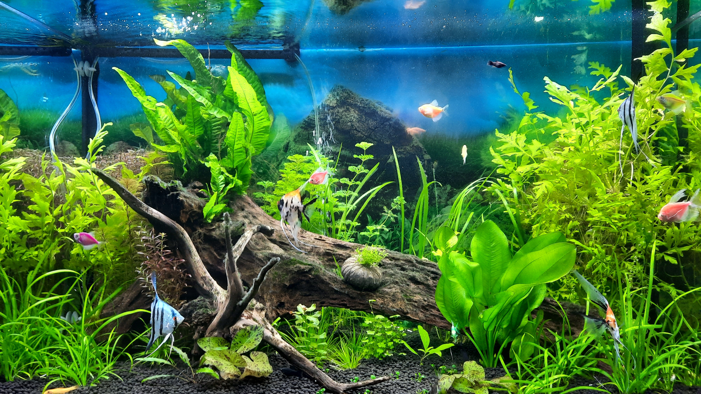
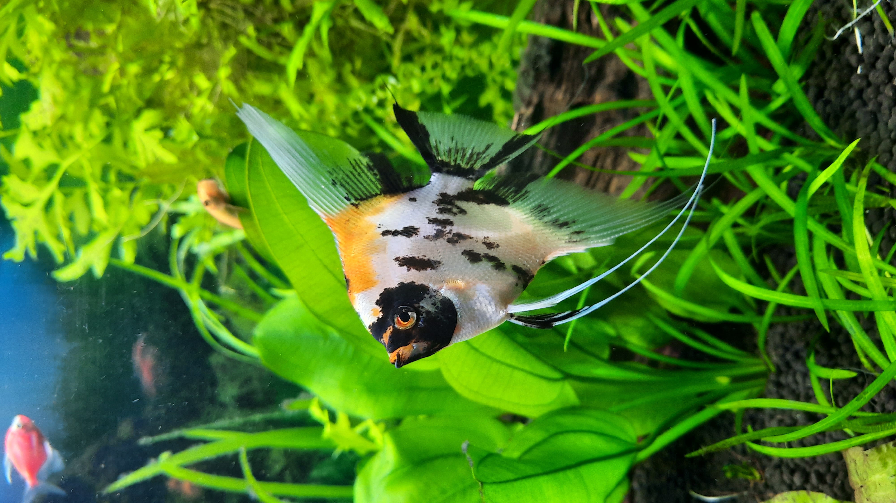

Аквариумистика

В жизни у меня было несколько аквариумов. Первый, объемом примерно в пару ведер, мне подарил отец, когда мне было еще лет тринадцать. Это была конструкция из стекла, заключенного в железные рамки, в котором плескались гуппи, меченосцы и моллинезии. Я уложила на дно песок с ближайшей речки в качестве грунта, за декор отвечала горстка ракушек найденных все на том же берегу речки. После тщетных попыток вырастить в этой банке что-то из живых растений, было принято решение натыкать растительность из пластика. Простоял этот аквариум у меня до окончания школы. Во времена студенчества от него пришлось отказаться по причине нехватки времени на уход за его обитателями, но зародилась мечта о большем объеме баночки, когда позволит время.
Второй аквариум — на сто двадцать литров — я купила уже самостоятельно. Тот аквариум довольно долго стоял у меня и вошел в стадию устойчивого биотопа: он не зарастал, рыбы не дохли, вода не тухла. Время от времени я доливала туда свежей воды и раз в месяц меняла пол-аквариума.
Потом я вышла замуж, и аквариум переехал со мной в новую квартиру. Там он просуществовал еще три года. Пока моя маленькая дочь не решила помочь мне с кормлением рыбок. Пока я отвлеклась, она угостила их самым вкусным, что у нее было на тот момент. А именно, это был пряник и к следующему утру вся рыбная толпа дружно всплыла пузиками к верху. После этого случая я надолго отказалась от своего увлечения. Прошли годы, дочери уже двенадцать лет, и я снова вернулась к аквариуму. На этот раз он объемом в двести сорок литров, у него мощный внешний фильтр и прочее оборудование, делающее жизнь рыбок более комфортной и сокращающее трудоемкость ухода за аквариумом. Теперь это подводный сад с множеством красивых живых растений. Живут там: Скалярии, Лялиусы, Тернеции и Коридорасы. Мне очень нравится по вечерам садиться перед ним с кружкой ароматного чая с жасмином и наблюдать за моим подводным садом.
Ночью аквариум нежно побулькивает, а с утра вся обитающая в нем живность толпится у стекла и внимательно следит за мной из-за стекла, ожидая кормежки. Если вместо корма сунуть палец — получится массаж. Вот такие маленькие радости.
Единственное, что меня озадачивает, так это черная борода и необходимость регулярно подменивать воду, хотя прошлый аквариум был начисто лишен этих недостатков, не теряя при этом эстетической ценности. Но это — уже совсем другая история.